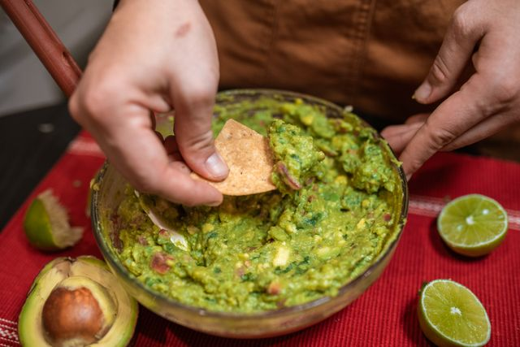

Home
Guacamole Recipe

Description
Guacamole is a fresh Mexican dip made from ripe avocados, lime, onion and coriander.
It takes about ten minutes to make and goes well with tortilla chips, tacos or toast.
Ingredients
- 3 ripe avocados
- 1 lime, juiced
- 1/2 red onion, finely chopped
- 1 tomato, diced
- 2 tablespoons fresh coriander, chopped
- Salt to taste
Steps
- Cut the avocados in half, remove the pits and scoop the flesh into a bowl.
- Mash with a fork to the texture you like.
- Add the lime juice and salt, then mix.
- Stir in the onion, tomato and coriander.
- Taste, adjust the salt and lime, and serve right away.